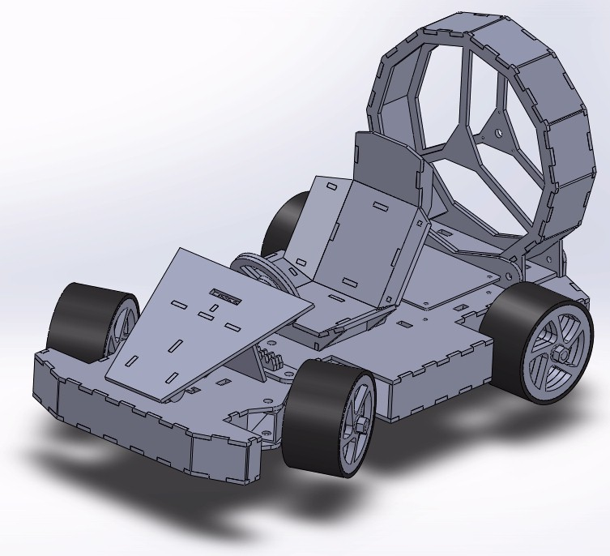
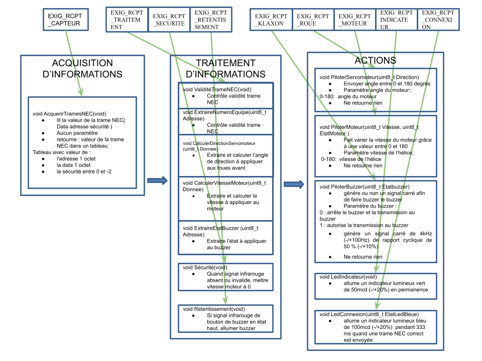

Réalisation du kart
Pour réaliser ce projet, il nous a été fournis un cahier des charges auquel le prototype devait strictement correspondre
1re étape
La première étape consiste à identifier les éléments constituant les 4 blocs suivants :
- Acquisition
- Traitement
- Action
- Energie
Les composants présent dans ces quatres parties sont des composants permettant de remplir les exigences du cahier des charges. Il se peut que, lors de la conception détailler, nous soyont obliger de selectionner d'autre composant, en rajouter ou en retirer.
Nous en déduison donc le schema suivant :

D'après le schema ci-dessus, nous observons que le coeur de traitement sera, imposé par le cahier des charges, un microcontroleur Arduino Uno. La carte que nous allons fabriquer
viendra se connecter a l'arduino.
D'après le cahier des charges, pour ne pas perdre le combat, le robot ne doit pas sortir de l'arène, c'est pour cela que nous avons séléctionner deux capteurs optique capable de differencier le noir et le blanc. Ils ont donc pour objectif de detecter les lignes blanches délimitant l'arène sur laquelle les robot s'affrontent, puisqu'elle est noir au centre et entouré de blanc. Cela permettra donc au robot, via le programme, de ne pas sortir de l'arène.
Le cahier des charges stipule que le robot doit étre autonomme en énergie pour une durée minimun de 15 min, pour respecter cette
exigence, nous avons séléctionner une batterie LIPO de 800 mAh. D'après les calculs préliminaire de consommation électrique de la carte,
cette valeur suffira.
Une exigence demande que, si la batterie est décharger, donc, si sa tension est trop faible, le robot s'éteigne automatiquement. Pour ce faire, nous utilisons
un composant capabable de donner une tension fixe, peut importe la tension d'entrée, la référence de tension. Nous comparons ensuite
cette valeurs avec la valeur de la batterie a l'aide d'un comparateur, ce composant va produire une tension tant que la valeur de la
batterie est suprérieur a celle de la référence de tension, sinon il ne produira rien. Ensuite avec le code
Sur le même principe, nous réalisons cette étude pour la partie informatique. Nous procédont à une analyse permettant de definir quelle fonction informatique permettra de respecter le cahier des charges. Nous en déduisons le schéma suivant :

Après avoir fait cette étude, nous réalisons la conception détailler. Pour ce faire nous reprenons les éléments de la conception préliminaire que nous détaillons, comment allons-nous relier les composants entre eux, quel valeur de résistance est nécéssaire, tout ce que nous devons faire pour que la carte soit fonctionnelle. Nous procédont également a l'élaboration du schema électrique ainsi que le schema de routage representant les pistes de la carte électronique.
Pour en savoir plus